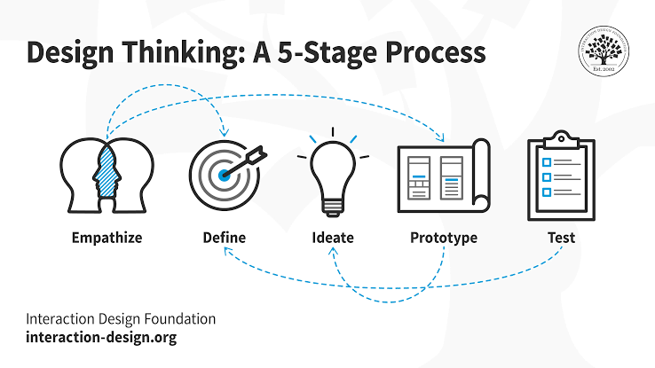

Bem-vindo!
Este site apresenta conteúdos estudados na disciplina de Desenvolvimento de Interfaces.
Utilize o menu acima para conhecer os temas.
Interação Humano-Computador
A Interação Humano-Computador (IHC) é uma área da Computação que estuda a interação entre pessoas e sistemas computacionais. Seu objetivo é desenvolver interfaces que sejam fáceis de aprender, eficientes, seguras, acessíveis e agradáveis de utilizar. A IHC considera não apenas o funcionamento de um sistema, mas também as necessidades, características e experiências dos usuários.
Seu objetivo é compreender como os usuários utilizam computadores, aplicativos, sites e outros sistemas digitais.
Importância da IHC
A IHC é importante porque não basta um sistema funcionar. Ele também precisa ser fácil de entender e usar. Uma interface bem planejada pode diminuir erros e tornar a experiência do usuário muito melhor. A acessibilidade também é importante para que pessoas com diferentes necessidades consigam utilizar os sistemas.
Principais características
- Usabilidade: ser fácil de usar.
- Acessibilidade: poder ser utilizada por diferentes pessoas.
- Eficiência: permitir que as tarefas sejam realizadas rapidamente.
- Segurança: evitar erros e ajudar o usuário a corrigi-los.
- Facilidade de aprendizado: ser simples de entender.
Mudanças da IHC
A IHC passou por grandes mudanças conforme os computadores e as tecnologias foram evoluindo.
- 1ª geração (1940-1950): computadores enormes, com válvulas, e interação muito limitada.
- 2ª bgeração (1950-1960): surgiram os transistores, tornando os computadores menores e mais rápidos.
- 3ª geração (1960-1970): circuitos integrados começaram a ser usados e a interação ficou mais prática.
- 4ª geração (1970-1980): surgiram os computadores pessoais e interfaces mais fáceis de usar.
- 5ª geração (1980-atualmente): computadores ficaram cada vez mais avançados, com interfaces gráficas, Internet, telas touch, comandos de voz e inteligência artificial.
IHC no dia a dia
A IHC está presente em redes sociais, aplicativos bancários, jogos, sites e diversos outros sistemas que utilizamos.

Design Thinking
Design Thinking é uma abordagem utilizada para solucionar problemas colocando as necessidades das pessoas no centro do processo.
1. Empatia
Nesta etapa é necessário entender o usuário, suas necessidades, dificuldades e objetivos.
2. Definição
Após entender o problema, é necessário definir quais são os principais desafios que precisam ser resolvidos.
3. Ideação
Nesta etapa são criadas diferentes ideias e possíveis soluções para o problema.
4. Prototipação
As ideias começam a ser transformadas em protótipos para visualizar uma possível solução.
5. Testes
Os protótipos são testados para identificar pontos positivos e possíveis melhorias.

As 10 Heurísticas de Nielsen
As heurísticas de Nielsen são princípios utilizados para melhorar a usabilidade de interfaces.
1. Visibilidade do status do sistema
O sistema deve informar ao usuário o que está acontecendo, mostrando mensagens, carregamentos e outras informações importantes.
2. Correspondência entre o sistema e o mundo real
O sistema deve utilizar palavras, símbolos e informações que sejam familiares para o usuário.
3. Controle e liberdade do usuário
O usuário deve conseguir desfazer ou cancelar ações quando cometer algum erro.
4. Consistência e padronização
Elementos semelhantes devem funcionar e aparecer de maneira consistente em diferentes partes do sistema.
5. Prevenção de erros
O sistema deve evitar que erros aconteçam e orientar o usuário antes que uma ação problemática seja realizada.
6. Reconhecimento em vez de memorização
As informações e opções importantes devem estar visíveis, evitando que o usuário precise memorizar informações.
7. Flexibilidade e eficiência de uso
O sistema deve atender tanto usuários iniciantes quanto usuários experientes, oferecendo maneiras mais rápidas de realizar tarefas.
8. Estética e design minimalista
A interface deve apresentar apenas informações relevantes, evitando elementos desnecessários que possam distrair o usuário.
9. Ajudar a reconhecer e corrigir erros
Quando ocorrer um erro, o sistema deve explicar o problema de forma clara e indicar como o usuário pode solucioná-lo.
10. Ajuda e documentação
O sistema deve oferecer ajuda e documentação para auxiliar o usuário quando ele tiver dúvidas ou dificuldades.
WCAG e Paletas de Cores
WCAG é um padrão reconhecido internacionalmente, criado pelo W3C, com o intuito de tornar o conteúdo de sites e aplicativos mais acessíveis para pessoas com deficiência. WCAG tem como principais princípios:
- Perceptível: O conteúdo deve ser percebido por pelo menos um dos sentidos (visão, audição ou tátil).
- Funcional: Toda a navegação e botões precisam funcionar (inclusive via teclado).
- Compreensível: A linguagem e a navegação devem ser claras e previsíveis.
- Robusto: O código deve funcionar em diferentes leitores de tela e leitores/navegadores
Acessibilidade
Uma interface acessível permite que diferentes pessoas consigam utilizar um sistema com mais facilidade.
Contraste de cores
O contraste entre as cores é importante para facilitar a leitura de textos e a visualização dos elementos.
Paleta utilizada
Hierarquia visual
A hierarquia visual ajuda o usuário a identificar quais informações são mais importantes dentro de uma página.
UX/UI em Desenvolvimento de Interfaces
O que é UX?
UX significa User Experience, ou Experiência do Usuário. Está relacionada à forma como uma pessoa interage e se sente ao utilizar um produto digital.
Principais características da UX
- Facilidade de uso;
- Navegação intuitiva;
- Acessibilidade;
- Eficiência;
- Organização;
- Satisfação do usuário.
O que é UI?
UI significa User Interface, ou Interface do Usuário. É a parte visual e interativa de um sistema.
Principais características da UI
- Cores;
- Tipografia;
- Botões;
- Menus;
- Ícones;
- Organização visual.
UX/UI no Desenvolvimento de Interfaces
UX e UI trabalham juntas no desenvolvimento de interfaces. A UX está relacionada à experiência e facilidade de uso, enquanto a UI está relacionada à aparência visual.
O que mudou nos últimos cinco anos?
- Maior preocupação com acessibilidade;
- Maior utilização de inteligência artificial;
- Interfaces responsivas para diferentes dispositivos;
- Experiências mais personalizadas;
- Interfaces mais simples e organizadas;
- Maior preocupação com privacidade.
Conclusão
UX e UI são importantes para criar sistemas que sejam bonitos, organizados, fáceis de utilizar e acessíveis para diferentes usuários.